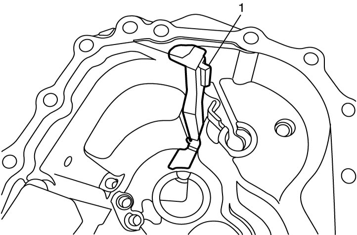
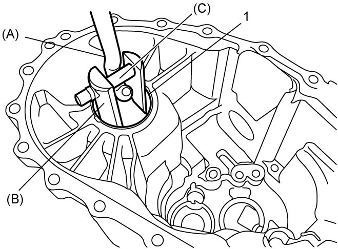
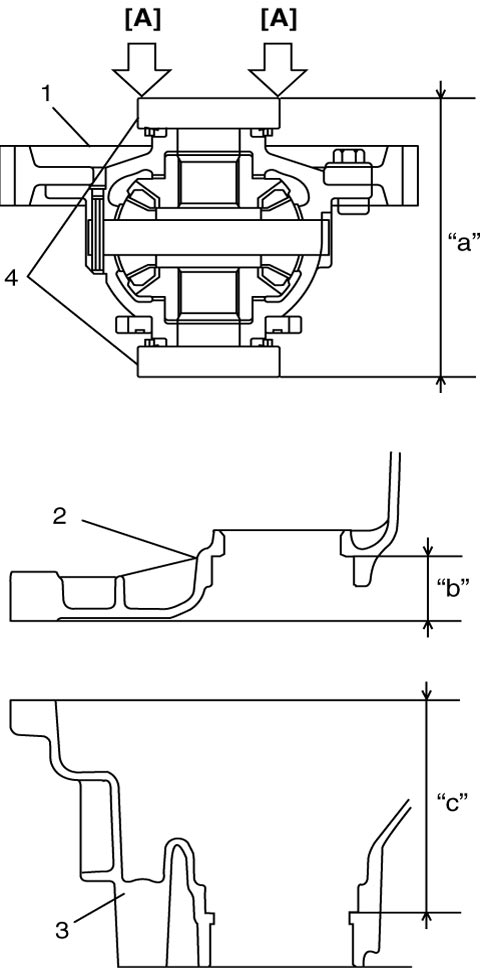
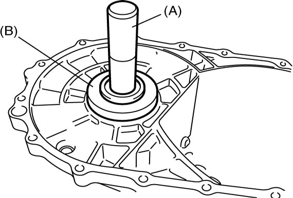

5B
| Left Case Disassembly and Reassembly |
Disassembly
1)Removal oil gutter (1), if necessary.


 "Expand image")
2)Remove oil seal using flat-bladed screwdriver or the like.
3)Remove differential side bearing outer race (1) and shim using special tools.

 "Expand image")
Reassembly
1)If oil gutter has been removed, install it.
2)Select differential left side bearing shim as follows.
a)Keep pushing outer race with force of 35 N (3.6 kgf, 7.9 lbf) and turn differential case 10 times or more.
b)Measure distance “a” of differential assembly (1).
c)Measure depth “b” of left case (2) and “c” of right case (3).
d)Calculate the clearance of “d” by the following formula.
| Clearance “d” = Depth “b” + Depth “c” – Distance “a” |

 "Expand image")
| [A] | Push with force of 35 N (3.6 kgf, 7.9 lbf) | 4. | Outer race |
e)Select shims closest to clearance “d” from the following available sizes.
Available shim thickness
| Clearance “d” | Applicable shim |
|---|---|
| 0.795 – 0.835 mm (0.0313 – 0.0329 in.) |
1.00 mm (0.0394 in.) |
| 0.835 – 0.875 mm (0.0329 – 0.0344 in.) |
1.04 mm (0.0409 in.) |
| 0.875 – 0.915 mm (0.0344 – 0.0360 in.) |
1.08 mm (0.0425 in.) |
| 0.915 – 0.955 mm (0.0360 – 0.0376 in.) |
1.12 mm (0.0441 in.) |
| 0.955 – 0.995 mm (0.0376 – 0.0392 in.) |
1.16 mm (0.0457 in.) |
| 0.995 – 1.035 mm (0.0392 – 0.0407 in.) |
1.20 mm (0.0472 in.) |
| 1.035 – 1.075 mm (0.0407 – 0.0423 in.) |
1.24 mm (0.0488 in.) |
| 1.075 – 1.115 mm (0.0423 – 0.0439 in.) |
1.28 mm (0.0504 in.) |
| 1.115 – 1.155 mm (0.0439 – 0.0455 in.) |
1.32 mm (0.0520 in.) |
| 1.155 – 1.195 mm (0.0455 – 0.0470 in.) |
1.36 mm (0.0535 in.) |
| 1.195 – 1.235 mm (0.0470 – 0.0486 in.) |
1.40 mm (0.0551 in.) |
| 1.235 – 1.275 mm (0.0486 – 0.0502 in.) |
1.44 mm (0.0567 in.) |
| 1.275 – 1.315 mm (0.0502 – 0.0518 in.) |
1.48 mm (0.0583 in.) |
| 1.315 – 1.355 mm (0.0518 – 0.0533 in.) |
1.52 mm (0.0598 in.) |
| 1.355 – 1.395 mm (0.0533 – 0.0549 in.) |
1.56 mm (0.0614 in.) |
| 1.395 – 1.435 mm (0.0549 – 0.0565 in.) |
1.60 mm (0.0630 in.) |
| 1.435 – 1.475 mm (0.0565 – 0.0581 in.) |
1.64 mm (0.0646 in.) |
| 1.475 – 1.515 mm (0.0581 – 0.0596 in.) |
1.68 mm (0.0661 in.) |
3)Install differential side bearing outer race using special tools.

 "Expand image")
4)Install oil seal referring to Differential Side Oil Seal Replacement:D16AA-6M/T Model.